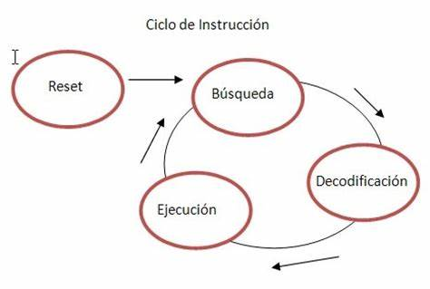

Un ciclo de instrucción (también llamado ciclo de fetch-and-execute o ciclo de fetchdecode-execute en inglés) es el período que tarda la unidad central de proceso (CPU) en ejecutar una instrucción de lenguaje máquina. Comprende una secuencia de acciones determinada que debe llevar a cabo la CPU para ejecutar cada instrucción en un programa. Cada instrucción del juego de instrucciones de una CPU puede requerir diferente número de ciclos de instrucción para su ejecución. Un ciclo de instrucción está formado por uno o más ciclos máquina.
